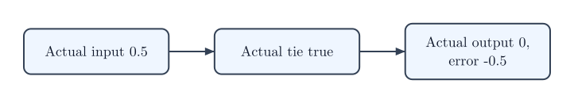
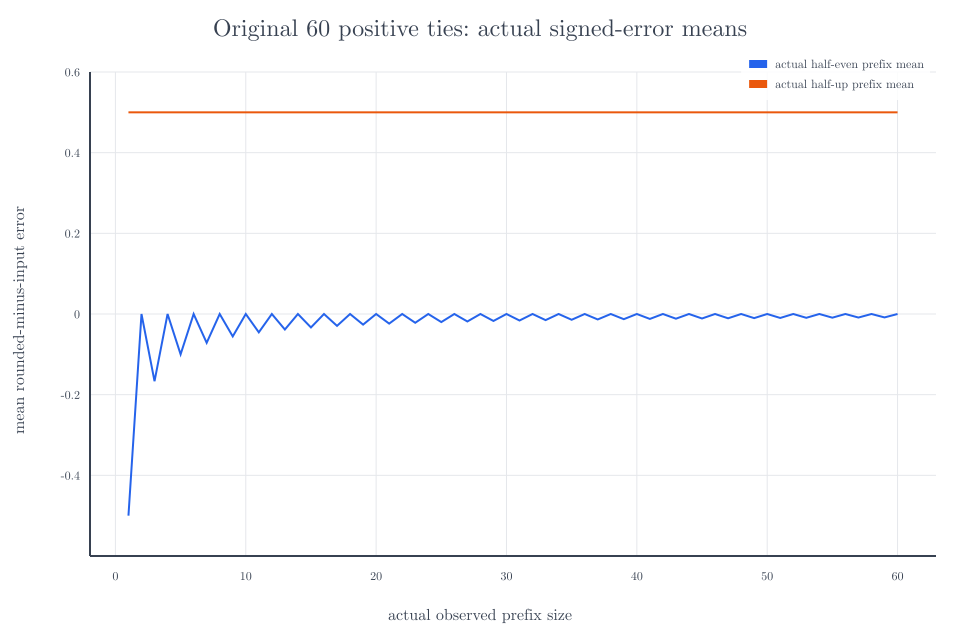
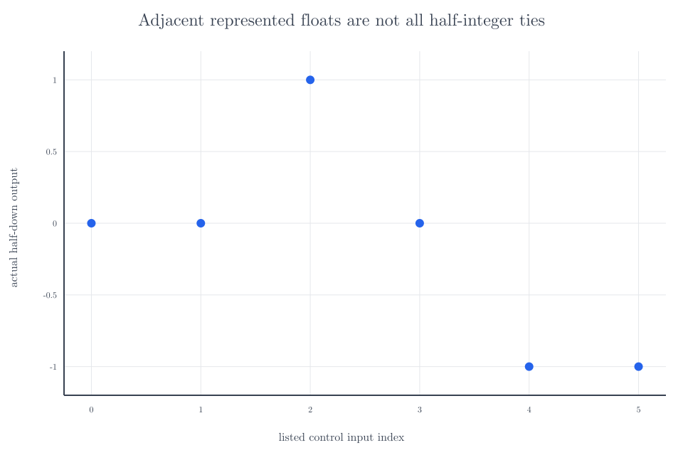
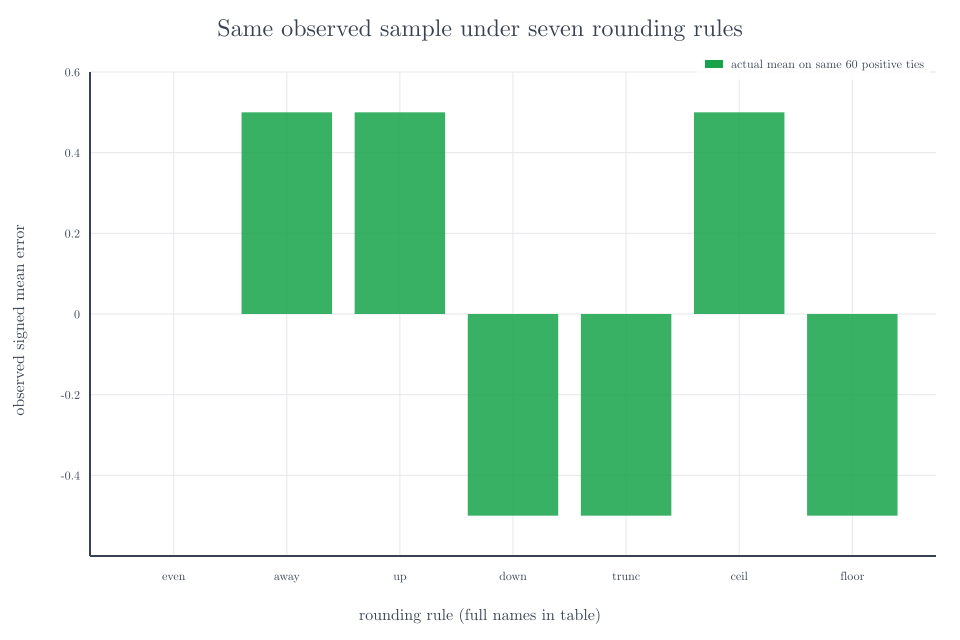

Rounding rules: actual half-integer decisions and sample-specific signed error
Abstract
Map observations to integer-valued outputs with an explicit tie rule and measure the observed rounding error. Integer rounding differs at represented half-integers and in directed modes. The native producer now classifies original fractions before deciding ties and captures actual per-value errors. The original six scalar examples and 60 positive ties remain, with adjacent-float controls.
Mechanism and mathematical scope
Write x=floor(x)+r. For a nearest-integer rule, r<1/2 chooses the lower integer and r>1/2 the upper; only r=1/2 invokes the tie rule. The producer uses a widened input-minus-floor difference so addition of1/2 does not round before classification.
A mean error is descriptive for the supplied sample. Half-to-even balances alternating parity ties in this particular 60-value fixture; it is not unbiased for every possible population. Scalar NaN/infinities propagate, but error summaries require finite samples.
A tiny actual producing history
The table and native concept diagram read the same producing execution. Every block below is a complete editable C++ program.
#include <dm/dm.hpp>
int main() {
namespace a = dm::algorithms;
namespace g = dm::graphics;
std::filesystem::create_directories("build");
auto t = a::rounding_trace({.5, 1.5, -.5, -1.5}, a::RoundMode::HalfToEven);
std::print("| input | widened fraction | actual tie | rounded | error | running mean |\n| ---: | ---: | " "--- | ---: | ---: | ---: |\n");
for (const auto &s : t.steps)
std::print("| {} | {} | {} | {} | {} | {} |\n", s.input, s.fraction,
s.tie, s.rounded, s.error, s.mean_error);
g::Diagram d(48, 1100);
d.node("n0", {0, 0}, std::format("Actual input {}", t.steps[0].input));
d.node("n1", {5, 0}, std::format("Actual tie {}", t.steps[0].tie));
d.node("n2", {10, 0},
std::format("Actual output {}, error {}", t.steps[0].rounded,
t.steps[0].error));
d.edge("n0", "n1").edge("n1", "n2");
d.save_svg("build/rounding_functions_tiny.svg");
}| input | widened fraction | actual tie | rounded | error | running mean |
|---|---|---|---|---|---|
| 0.5 | 0.5 | true | 0 | -0.5 | -0.5 |
| 1.5 | 0.5 | true | 2 | 0.5 | 0 |
| -0.5 | 0.5 | true | 0 | 0.5 | 0.16666666666666666 |
| -1.5 | 0.5 | true | -2 | -0.5 | 0 |

The retained original experiment
#include <dm/dm.hpp>
int main() {
namespace a = dm::algorithms;
namespace g = dm::graphics;
std::filesystem::create_directories("build");
const auto ties = a::rounding_example_ties();
auto even =
a::rounding_trace(ties, a::RoundMode::HalfToEven), up =
a::rounding_trace(ties, a::RoundMode::HalfUp);
std::print("| original scalar | half-even | half-away | half-up |\n| ---: | ---: | ---: | ---: |\n");
for (double x : {.5, 1.5, 2.5, 3.5, -.5, -1.5})
std::print("| {} | {} | {} | {} |\n", x, a::round_half_to_even(x),
a::round_half_away_from_zero(x), a::round_half_up(x));
std::print("\nOriginal positive ties {}, actual half-even mean {}, half-up mean {}.\n\n| actual prefix " "size | half-even running mean | half-up running mean |\n| ---: | ---: | ---: |\n",
ties.size(), even.mean_error, up.mean_error);
std::vector<double> x, e, u;
for (std::size_t i = 0; i < ties.size(); ++i) {
std::print("| {} | {} | {} |\n", i + 1, even.steps[i].mean_error,
up.steps[i].mean_error);
x.push_back(i + 1);
e.push_back(even.steps[i].mean_error);
u.push_back(up.steps[i].mean_error);
}
auto p = g::RPlot::create();
p.lines(x, e, "actual half-even prefix mean", {37, 99, 235}).lines(
x, u, "actual half-up prefix mean", {234, 88, 12}).title(
"Original 60 positive ties: actual signed-error means").x_label(
"actual observed prefix size").y_label("mean rounded-minus-input error");
p.save_svg("build/rounding_functions_original.svg");
}| original scalar | half-even | half-away | half-up |
|---|---|---|---|
| 0.5 | 0 | 1 | 1 |
| 1.5 | 2 | 2 | 2 |
| 2.5 | 2 | 3 | 3 |
| 3.5 | 4 | 4 | 4 |
| -0.5 | 0 | -1 | 0 |
| -1.5 | -2 | -2 | -1 |
Original positive ties 60, actual half-even mean 0, half-up mean 0.5.
| actual prefix size | half-even running mean | half-up running mean |
|---|---|---|
| 1 | -0.5 | 0.5 |
| 2 | 0 | 0.5 |
| 3 | -0.16666666666666666 | 0.5 |
| 4 | 0 | 0.5 |
| 5 | -0.1 | 0.5 |
| 6 | 0 | 0.5 |
| 7 | -0.07142857142857142 | 0.5 |
| 8 | 0 | 0.5 |
| 9 | -0.05555555555555555 | 0.5 |
| 10 | 0 | 0.5 |
| 11 | -0.045454545454545456 | 0.5 |
| 12 | 0 | 0.5 |
| 13 | -0.038461538461538464 | 0.5 |
| 14 | 0 | 0.5 |
| 15 | -0.03333333333333333 | 0.5 |
| 16 | 0 | 0.5 |
| 17 | -0.029411764705882353 | 0.5 |
| 18 | 0 | 0.5 |
| 19 | -0.02631578947368421 | 0.5 |
| 20 | 0 | 0.5 |
| 21 | -0.023809523809523808 | 0.5 |
| 22 | 0 | 0.5 |
| 23 | -0.021739130434782608 | 0.5 |
| 24 | 0 | 0.5 |
| 25 | -0.02 | 0.5 |
| 26 | 0 | 0.5 |
| 27 | -0.018518518518518517 | 0.5 |
| 28 | 0 | 0.5 |
| 29 | -0.017241379310344827 | 0.5 |
| 30 | 0 | 0.5 |
| 31 | -0.016129032258064516 | 0.5 |
| 32 | 0 | 0.5 |
| 33 | -0.015151515151515152 | 0.5 |
| 34 | 0 | 0.5 |
| 35 | -0.014285714285714285 | 0.5 |
| 36 | 0 | 0.5 |
| 37 | -0.013513513513513514 | 0.5 |
| 38 | 0 | 0.5 |
| 39 | -0.01282051282051282 | 0.5 |
| 40 | 0 | 0.5 |
| 41 | -0.012195121951219513 | 0.5 |
| 42 | 0 | 0.5 |
| 43 | -0.011627906976744186 | 0.5 |
| 44 | 0 | 0.5 |
| 45 | -0.011111111111111112 | 0.5 |
| 46 | 0 | 0.5 |
| 47 | -0.010638297872340425 | 0.5 |
| 48 | 0 | 0.5 |
| 49 | -0.01020408163265306 | 0.5 |
| 50 | 0 | 0.5 |
| 51 | -0.00980392156862745 | 0.5 |
| 52 | 0 | 0.5 |
| 53 | -0.009433962264150943 | 0.5 |
| 54 | 0 | 0.5 |
| 55 | -0.00909090909090909 | 0.5 |
| 56 | 0 | 0.5 |
| 57 | -0.008771929824561403 | 0.5 |
| 58 | 0 | 0.5 |
| 59 | -0.00847457627118644 | 0.5 |
| 60 | 0 | 0.5 |

Explicit controls
#include <dm/dm.hpp>
int main() {
namespace a = dm::algorithms;
namespace g = dm::graphics;
std::filesystem::create_directories("build");
const std::vector<double> values{std::nextafter(.5, 0.), .5,
std::nextafter(.5, 1.),
std::nextafter(-.5, 0.), -.5,
std::nextafter(-.5, -1.)};
auto t = a::rounding_trace(values, a::RoundMode::HalfDown);
std::print("| original float | widened fraction | actual tie | half-down output |\n| ---: | ---: | --- " "| ---: |\n");
std::vector<double> x, y;
for (std::size_t i = 0; i < values.size(); ++i) {
const auto &s = t.steps[i];
std::print("| {:.17g} | {:.20g} | {} | {} |\n", s.input, s.fraction,
s.tie, s.rounded);
x.push_back(i);
y.push_back(s.rounded);
}
bool rejected = false;
try {
a::rounding_run({std::numeric_limits<double>::quiet_NaN()},
a::RoundMode::HalfUp);
} catch (const std::invalid_argument &) {
rejected = true;
}
std::print("Nonfinite summary observation rejected: {}; scalar infinity propagates: {}.\n",
rejected,
a::round_half_to_even(std::numeric_limits<double>::infinity()));
if (!rejected || t.steps[3].tie || t.rounded[3] != 0)
return 1;
auto p = g::RPlot::create();
p.points(x, y, {37, 99, 235}, 6).title("Adjacent represented floats are not all half-integer ties").x_label("listed control input index").y_label("actual half-down output");
p.save_svg("build/rounding_functions_controls.svg");
}| original float | widened fraction | actual tie | half-down output |
|---|---|---|---|
| 0.49999999999999994 | 0.49999999999999994449 | false | 0 |
| 0.5 | 0.5 | true | 0 |
| 0.50000000000000011 | 0.50000000000000011102 | false | 1 |
| -0.49999999999999994 | 0.50000000000000005551 | false | 0 |
| -0.5 | 0.5 | true | -1 |
| -0.50000000000000011 | 0.49999999999999988898 | false | -1 |
Nonfinite summary observation rejected: true; scalar infinity propagates: inf.

Actual selected work and sensitivity
#include <dm/dm.hpp>
int main() {
namespace a = dm::algorithms;
namespace g = dm::graphics;
std::filesystem::create_directories("build");
auto values = a::rounding_example_ties();
std::vector<double> x, y;
std::vector<std::string> labels;
std::print("| rule | actual ties | observed mean error |\n| --- | ---: | ---: |\n");
for (auto mode : {a::RoundMode::HalfToEven, a::RoundMode::HalfAwayFromZero,
a::RoundMode::HalfUp, a::RoundMode::HalfDown,
a::RoundMode::TowardZero, a::RoundMode::Ceil,
a::RoundMode::Floor}) {
auto t = a::rounding_run(values, mode);
std::print("| {} | {} | {} |\n", a::round_mode_name(mode), t.ties,
t.mean_error);
x.push_back(x.size());
y.push_back(t.mean_error);
labels.emplace_back(a::round_mode_name(mode));
}
labels = {"even", "away", "up", "down", "trunc", "ceil", "floor"};
auto p = g::RPlot::create();
p.bars(x, y, "actual mean on same 60 positive ties", {22, 163, 74}, .8).x_ticks(x, labels).title("Same observed sample under seven rounding rules").x_label("rounding rule (full names in table)").y_label("observed signed mean error");
p.save_svg("build/rounding_functions_work.svg");
}| rule | actual ties | observed mean error |
|---|---|---|
| half-to-even | 60 | 0 |
| half-away-from-zero | 60 | 0.5 |
| half-up | 60 | 0.5 |
| half-down | 60 | -0.5 |
| toward-zero | 60 | -0.5 |
| ceil | 60 | 0.5 |
| floor | 60 | -0.5 |

API and interpretation
Integer-valued outputs remain floating-point scalars; no narrowing to an integer type occurs. Ties refer to the original represented input. Signed zero inputs propagate unchanged. Sample summaries validate all observations before rounding and accumulate errors in widened arithmetic. Positive-only ties deliberately expose a direction bias that need not generalize to another sample.
Reusable producers, fixtures and histories live in the canonical C++ library. Captured records own their values and do not come from a separate report replay. Selected counters and record/scalar policies are specified at their API boundaries; they are not peak-byte or wall-time budgets. Synthetic structural inputs are controlled fixtures for these mechanisms.
References
Verification: 133 scoped native cases;20 directly instrumented ASan/UBSan
cases;85 executable public examples;343/343 full-file definitions;10 hovers;1263
independent records/220175 checks;frozen compatibility across all ten
families;11 checkout/installed standalone headers and linked consumer;40
executed programs and40 inspected figures with both exports. Receipts:
build/mepml-conversion/batch-324-333/.